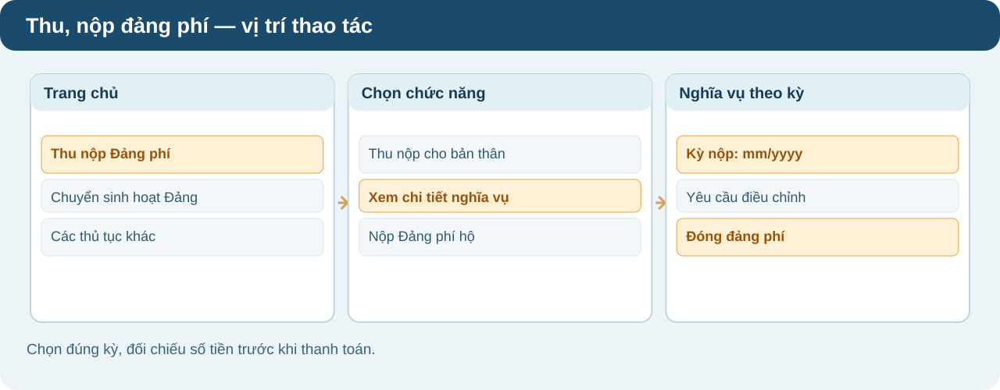
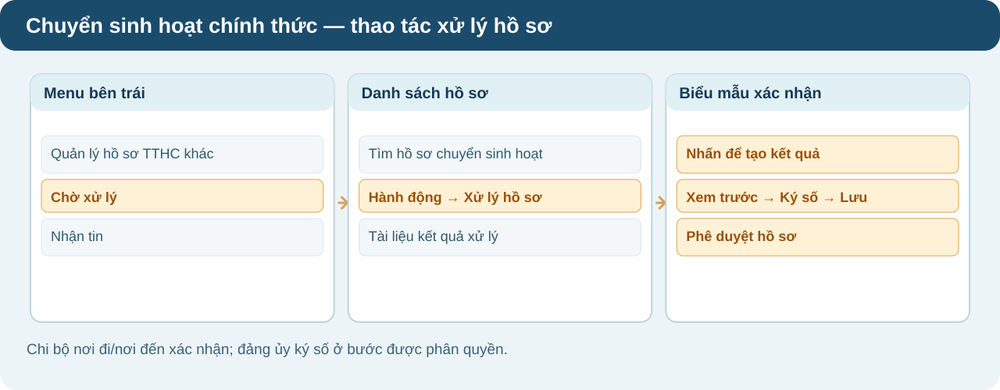
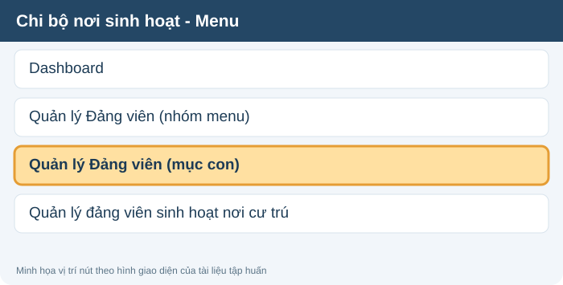
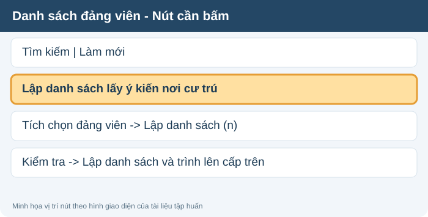
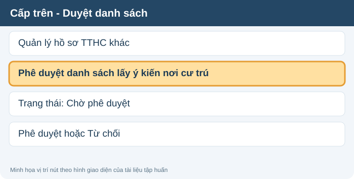
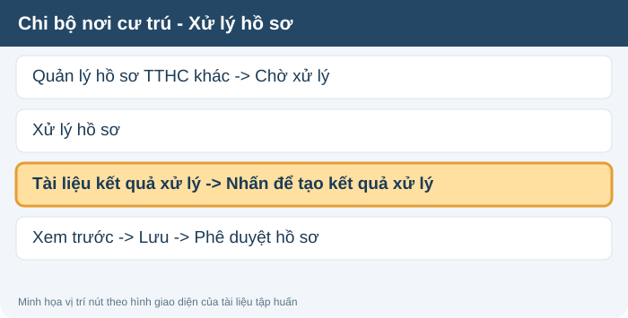
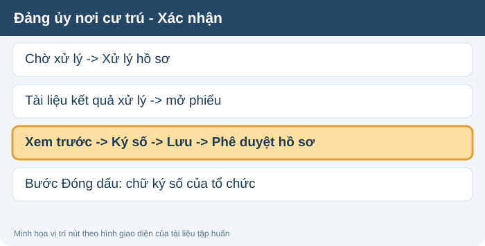
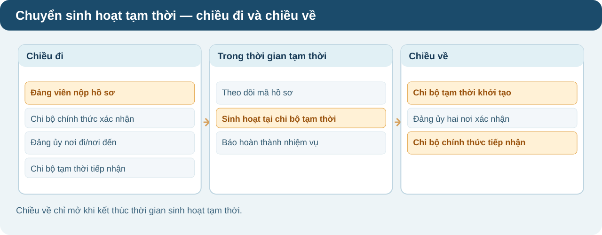

Chọn kỳ đến hạn và thanh toán từ tài khoản ngân hàng cá nhân.
Tài liệu đào tạo · 05/11/2026
Ba thủ tục được giải thích bằng sơ đồ từng bước
Chọn đúng thủ tục, xem ai thực hiện và hồ sơ chuyển sang đâu. Mỗi khối có phần ngắn để đọc nhanh và phần mở rộng khi cần xử lý chi tiết.
Thu, nộp đảng phí
Hồ sơ đảng phí được tự động tạo theo kỳ. Đảng viên xem nghĩa vụ, kiểm tra số tiền và thanh toán; nếu sai mức đóng thì gửi yêu cầu điều chỉnh.
Đường dẫn thao tác: Tài khoản đảng viên → Thu nộp Đảng phí → Xem chi tiết nghĩa vụ → chọn Kỳ nộp
Phần 01 · Thu, nộp đảng phí
Hệ thống tính tiền — đảng viên kiểm tra và nộp
Mốc cần nhớ: Dữ liệu BHXH nhận ngày 05. Kỳ thu mở từ 00:00 ngày 06 hằng tháng; nếu thông tin đã đúng thì không cần kê khai lại hoặc chờ duyệt.
Trường hợp 1 · Số tiền đúngĐi thẳng tới thanh toán, không qua bước xét duyệt
1
Đảng viên
Đăng nhập bằng hệ thống, VNeID hoặc Sổ tay đảng viên.
2
Hệ thống
Hiển thị kỳ nộp, căn cứ tính và số phải đóng.
4
Đảng viên
Chọn “Nộp đảng phí”, thanh toán qua ngân hàng.
5
Hệ thống
Xác nhận “Đã nộp”, phát biên lai điện tử.
Trường hợp 2 · Số tiền chưa đúngCó đề nghị xem xét, bổ sung minh chứng
1–2
Đảng viên
Đối chiếu kỳ và số tiền; chọn đề nghị xem xét/điều chỉnh.
3
Cán bộ phụ trách chi bộ
Kiểm tra căn cứ, xác nhận hoặc điều chỉnh mức phải đóng.
4
Đảng viên
Nhận số đã duyệt và thực hiện thanh toán.
5
Hệ thống
Chuyển “Đã nộp”, gửi biên lai điện tử.
3 cách nộp và 3 tình huống thường gặp
Tìm đúng người theo CCCD, họ tên, ngày sinh; kiểm tra kỳ và số tiền.
Chủ tài khoản đăng ký với ngân hàng liên kết; theo tài liệu, trích từ ngày 10 hằng tháng.
Gửi yêu cầu hoàn tiền kèm mã giao dịch, số tiền, lý do. Chi bộ duyệt; chỉ hoàn phần thừa khi tiền chưa phân bổ.
Chờ đồng bộ và gửi tra soát với mã giao dịch, thời gian, số tiền, chứng từ.
Khoản truy thu cộng với kỳ hiện tại để nộp; hệ thống phân bổ vào tháng nộp bù.
Phân bổ đảng phí cho tổ chức đảng
Đảng viên nộp thành công → tiền chuyển vào tài khoản trung gian. Hệ thống đối soát, gom trong khoảng T đến T+2 để phân bổ phần chi bộ; phần các cấp trên tính tiếp theo tỷ lệ, mốc T+10 theo tài liệu đào tạo.
Muốn nhận tiền phân bổ, tổ chức đảng cần tài khoản ngân hàng của tổ chức đã xác thực và xác nhận tỷ lệ phân bổ.
Theo tài liệu đào tạo: phần 01, trang 3–14.
Đảng viên — nộp cho bản thân
- Mở chức năng: Đăng nhập Hệ thống TTHC của Đảng → chọn thẻ “Thu nộp Đảng phí” → phần “Thu nộp Đảng phí cho bản thân”, bấm “Xem chi tiết nghĩa vụ”.
- Chọn kỳ: Tại “Thông tin nghĩa vụ nộp đảng phí”, bấm “Kỳ nộp”, chọn tháng cần nộp. Xem trạng thái ở bên cạnh ô chọn kỳ.
- Đối chiếu số tiền: Kiểm tra đối tượng BHXH, mức đóng, truy thu/giảm trừ, tỷ lệ miễn/giảm và “Giá trị đảng phí đảng viên cần đóng”.
- Thanh toán: Nếu đúng, bấm “Đóng đảng phí” → kiểm tra “Thông tin khoản nộp” → chọn QR/VNPT Money hoặc phương thức khác → bấm “Đóng đảng phí” và thực hiện thanh toán.
- Xem kết quả: Vào “Dịch vụ công của tôi → Đảng phí” để xem lịch sử, trạng thái hồ sơ và hóa đơn. Kỳ đã nộp thành công chỉ xem.
Mức đóng không đúng — gửi điều chỉnh
- Tạo yêu cầu: Ngay màn “Thông tin nghĩa vụ nộp đảng phí”, bấm “Yêu cầu điều chỉnh”; nếu chưa có căn cứ tính mức đóng, bấm “Gửi thông tin mức đảng phí”.
- Gửi hồ sơ: Chọn “Phân loại điều chỉnh đảng phí”, điền mức đề xuất và lý do; đính kèm ít nhất một minh chứng theo yêu cầu → gửi yêu cầu.
- Cán bộ phê duyệt: Tài khoản bí thư/cán bộ được phân quyền vào “Quản lý hồ sơ Đảng phí → Hồ sơ cần điều chỉnh” → lọc kỳ/người nộp → “Xử lý yêu cầu” → kiểm tra minh chứng → nhập mức và lý do → “Phê duyệt điều chỉnh”.
- Hoàn tất: Đảng viên nhận thông báo; hồ sơ chuyển sang “Chờ nộp đảng phí” với mức đã được duyệt, sau đó thực hiện thanh toán.
Nộp hộ / miễn hoàn toàn
- Nộp hộ: Trong thẻ “Thu nộp Đảng phí”, chọn mục nộp hộ → “Xem chi tiết nghĩa vụ”; tìm đúng đảng viên theo số thẻ, họ tên, ngày sinh → chọn kỳ và kiểm tra số tiền trước khi thanh toán.
- Miễn 100%: Nếu mức miễn 100% đã được cấu hình đúng, hệ thống hiển thị nút “Hoàn thành” thay vì yêu cầu thanh toán có tiền.
▧ Xem hình vị trí nút bấm
Đối chiếu các tên menu, nút bấm được tô nổi bật trước khi thực hiện.

Hướng dẫn thao tác · 05/11/2026↓ Tải hướng dẫn PDF
Chuyển sinh hoạt đảng chính thức
Giấy giới thiệu điện tử gồm 6 vị trí xác nhận của tổ chức đảng nơi đi và nơi đến. Mỗi đơn vị xử lý hồ sơ ngay trong danh sách chờ của tài khoản được phân quyền.
Đường dẫn thao tác: Quản lý hồ sơ TTHC khác → Chờ xử lý → Xử lý hồ sơ → Nhấn để tạo kết quả xử lý
Phần 03 · Chuyển sinh hoạt đảng chính thức
Sáu bước từ nộp hồ sơ đến tiếp nhận
Điểm mới: Giấy giới thiệu điện tử 06 ô thay mẫu 07/10 ô. Theo tài liệu đào tạo, thủ tục hoàn thành trong 60 ngày làm việc kể từ khi quyết định có hiệu lực hoặc thay đổi nơi cư trú.
Đăng nhập, khai hồ sơ, làm bản tự kiểm điểm và nộp.
Đối chiếu hồ sơ, nhận xét bản tự kiểm điểm; phê duyệt điện tử ô 1.
Kiểm tra hồ sơ, ký số ô 2 nếu có hoặc ô 3; chuyển hồ sơ.
Tiếp nhận, ký số ô 4, ô 5 nếu có; chuyển cho chi bộ nhận.
Tiếp nhận đảng viên; phê duyệt điện tử ô 6.
Nhận giấy giới thiệu điện tử và kết quả trên hệ thống.
Cách xác nhận giấy giới thiệu điện tử tại từng cấp
Chi bộ nơi đi: chi ủy kiểm tra quyết định, dữ liệu đảng viên; nếu đủ điều kiện, phê duyệt điện tử ô 1 (không phải ký số). Chi bộ không có chi ủy thì bí thư xử lý.
Đảng ủy nơi đi: xác định có cấp trực thuộc cơ sở hay không để xử lý ô 2 (nếu tham gia) rồi ký ô 3 ở cấp cơ sở.
Đảng ủy nơi đến: cấp cơ sở tiếp nhận trước, ký ô 4; cấp trực thuộc cơ sở chỉ xử lý ô 5 khi thuộc luồng tương ứng.
Chi bộ nơi đến: ghi ngày tiếp nhận, phê duyệt điện tử ô 6 để kết thúc. Đơn vị nhận tin chỉ theo dõi, không ký vào giấy.
Theo tài liệu đào tạo: phần 03, trang 23–28.
Đảng viên — tạo và theo dõi hồ sơ
- Khai hồ sơ: Đăng nhập bằng VNeID mức 2 → chọn “Chuyển sinh hoạt đảng chính thức” → khai nơi tiếp nhận, lý do và các trường bắt buộc; đính kèm bản tự kiểm điểm, căn cứ chuyển sinh hoạt.
- Nộp và theo dõi: Kiểm tra lại biểu mẫu rồi nộp hồ sơ. Lưu mã hồ sơ để theo dõi thông báo và giấy giới thiệu điện tử khi hoàn thành.
Chi bộ nơi đi — tiếp nhận, xác nhận vị trí 1
- Mở hồ sơ: Đăng nhập tài khoản chi bộ nơi đi → “Quản lý hồ sơ TTHC khác → Chờ xử lý” → tìm hồ sơ → ở cột Hành động bấm “Xử lý hồ sơ”.
- Điền giấy giới thiệu: Trong “Tài liệu kết quả xử lý”, bấm “Nhấn để tạo kết quả xử lý”; nhập “Kính gửi”, “Đã đóng đảng phí hết tháng”, “Hồ sơ kèm theo” và ngày phê duyệt.
- Gửi cấp trên: Bấm “Xem trước” → đối chiếu nội dung → “Lưu” → trở lại màn Xử lý hồ sơ và bấm “Phê duyệt hồ sơ”. Hệ thống chuyển tiếp cho đơn vị kế tiếp.
Đảng ủy nơi đi và nơi đến — ký số
- Đảng ủy trực thuộc cơ sở nơi đi (nếu có): Vào “Quản lý hồ sơ TTHC khác → Chờ xử lý” → “Xử lý hồ sơ” → “Nhấn để tạo kết quả xử lý” → kiểm tra vị trí 2 → “Xem trước → Ký số → Lưu → Phê duyệt hồ sơ”.
- Đảng ủy cơ sở nơi đi: Thực hiện tương tự ở vị trí 3, ký số và phê duyệt để chuyển hồ sơ tới đảng ủy cơ sở nơi đến.
- Đảng ủy cơ sở nơi đến: Thực hiện xử lý vị trí 4: “Chờ xử lý → Xử lý hồ sơ → Nhấn để tạo kết quả xử lý → Xem trước → Ký số → Lưu → Phê duyệt hồ sơ”.
- Đảng ủy trực thuộc cơ sở nơi đến (nếu có): Kiểm tra vị trí 5, ký số, lưu và phê duyệt để chuyển đến chi bộ tiếp nhận.
Chi bộ nơi đến — tiếp nhận và kết thúc
- Tiếp nhận: Vào “Quản lý hồ sơ TTHC khác → Chờ xử lý” → “Xử lý hồ sơ” → “Nhấn để tạo kết quả xử lý”; kiểm tra nội dung của vị trí 6.
- Kết thúc: Bấm “Xem trước → Lưu → Phê duyệt hồ sơ”. Hệ thống kết thúc luồng và lưu giấy giới thiệu điện tử.
▧ Xem hình vị trí nút bấm
Đối chiếu các tên menu, nút bấm được tô nổi bật trước khi thực hiện.

Hướng dẫn thao tác · 05/11/2026↓ Tải hướng dẫn PDF
Lấy ý kiến nhận xét nơi cư trú
Có 3 quy trình độc lập. Chọn theo mục đích thực hiện; không áp dụng bước “Lập danh sách lấy ý kiến nơi cư trú” cho mọi trường hợp.
QUY TRÌNH 1Giới thiệu về sinh hoạt nơi cư trúDùng khi: Giới thiệu mới hoặc thay đổi nơi cư trú.Khởi tạo: Chi bộ nơi đang sinh hoạt.Xem hướng dẫn quy trình 1
QUY TRÌNH 2Lấy ý kiến phục vụ công tác cán bộDùng khi: Quy hoạch, bổ nhiệm, điều động, khen thưởng, kỷ luật hoặc yêu cầu công tác cán bộ.Khởi tạo: Chi bộ nơi công tác lập danh sách và trình cấp trên duyệt.Xem 8 bước quy trình 2
QUY TRÌNH 3Nhận xét định kỳ cuối nămDùng khi: Kiểm điểm, đánh giá, xếp loại đảng viên cuối năm.Khởi tạo: Chi bộ nơi cư trú chủ động lập phiếu.Nơi công tác: Không lập danh sách khởi tạo; tiếp nhận kết quả để sử dụng trong kiểm điểm, đánh giá.Xem hướng dẫn quy trình 3
Phân biệt quan trọng: Chi bộ nơi công tác chỉ lập danh sách khởi tạo ở Quy trình 2. Trong Quy trình 3, chi bộ nơi công tác vẫn có trách nhiệm tiếp nhận và sử dụng kết quả nhận xét, nhưng chi bộ nơi cư trú là đơn vị chủ động khởi tạo.
QUY TRÌNH 02 · Lấy ý kiến phục vụ công tác cán bộ
Hướng dẫn từ đầu đến cuối: chi bộ nơi sinh hoạt lập danh sách trước
Đây là thủ tục dùng nút xanh “Lập danh sách lấy ý kiến nơi cư trú” trong ảnh bạn cung cấp. Khác với nhận xét cuối năm (Quy trình 03), ở đây chi bộ nơi sinh hoạt phải lập danh sách và trình cấp trên duyệt trước khi chi bộ nơi cư trú nhận hồ sơ.
Điều kiện: Đảng viên đã có thông tin chi bộ nơi cư trú và không có hồ sơ lấy ý kiến khác đang trong luồng xử lý. Nếu đã cập nhật đúng và nơi cư trú không đổi thì không phải khai lại mỗi năm.
A. Chi bộ nơi sinh hoạt / công tác — bước 1 đến 4
1
Mở chức năng Quản lý Đảng viên
Tài khoản chi bộ nơi sinh hoạt được cấp quyềnMenu trái → Quản lý Đảng viên → Quản lý Đảng viên. Chọn mục con Quản lý Đảng viên, không chọn “Quản lý đảng viên sinh hoạt nơi cư trú”.

2
Mở cửa sổ lập danh sách
Màn hình Quản lý Đảng viênTrong vùng Kết quả tìm kiếm, bấm nút xanh Lập danh sách lấy ý kiến nơi cư trú.

3
Chọn đảng viên
Tài khoản chi bộ có quyềnTích chọn những người cần lấy ý kiến; kiểm tra Chi bộ nơi cư trú. Danh sách chỉ hiện người có dữ liệu cư trú đầy đủ, không có hồ sơ cùng thủ tục đang xử lý. Bấm Lập danh sách (n).
4
Kiểm tra và trình danh sách
Chi bộ nơi sinh hoạtMàn Danh sách đảng viên tạo phiếu cho phép Thêm đảng viên hoặc xóa người đã chọn. Khi đã đúng, bấm Lập danh sách và trình lên cấp trên → Đóng. Lúc này hồ sơ chưa chuyển đến nơi cư trú.
B. Cấp ủy cấp trên của chi bộ nơi sinh hoạt — bước 5
5
Duyệt hoặc từ chối danh sách
Tài khoản cấp ủy được phân quyềnVào Quản lý hồ sơ TTHC khác → Phê duyệt danh sách lấy ý kiến nơi cư trú. Lọc trạng thái Chờ phê duyệt, tìm hồ sơ rồi bấm Phê duyệt hoặc Từ chối. Nếu duyệt, hệ thống tự chuyển về nơi cư trú.

C. Chi bộ nơi cư trú — bước 6
6
Lập phiếu và nhận xét
Tài khoản chi bộ nơi cư trú được phân quyềnVào Quản lý hồ sơ TTHC khác → Chờ xử lý → Xử lý hồ sơ. Trong Tài liệu kết quả xử lý bấm Nhấn để tạo kết quả xử lý. Điền tiêu chí theo đúng mẫu, địa danh, ngày lập phiếu, T/M Chi bộ – Người xử lý → Xem trước → Lưu. Trở lại hồ sơ bấm Phê duyệt hồ sơ.

D. Đảng ủy nơi cư trú — bước 7
7
Ký xác nhận, sau đó đóng dấu
Người xử lý được cấp quyền ký và chữ ký số tổ chứcVào Quản lý hồ sơ TTHC khác → Chờ xử lý → Xử lý hồ sơ. Mở Phiếu nhận xét trong Tài liệu kết quả xử lý → nhập Đơn vị xử lý, Người xử lý → Xem trước → Ký số → Lưu → Phê duyệt hồ sơ. Bước đóng dấu thực hiện riêng bằng chữ ký số tổ chức đảng (nút Đóng dấu).

E. Chi bộ nơi sinh hoạt nhận kết quả — bước 8
8
Tiếp nhận và thông báo
Chi bộ nơi đang sinh hoạt; đảng viên nhận thông báoSau khi nơi cư trú xác nhận và đóng dấu, chi bộ nơi sinh hoạt nhận phiếu, thông báo cho đảng viên và dùng đúng mục đích đã xin ý kiến. Đảng viên nhận phiếu đã xác nhận trên hệ thống.
Luồng đúng: Chi bộ nơi sinh hoạt lập danh sách → cấp trên phê duyệt → chi bộ nơi cư trú nhận xét → đảng ủy nơi cư trú ký, đóng dấu → nơi sinh hoạt nhận kết quả.
Khi chưa có thông tin chi bộ nơi cư trú — xem cách cập nhật một lần
Điều kiện chung cho cả ba quy trình
Cập nhật thông tin chi bộ nơi cư trú — làm trước, không lặp lại hằng năm
Nhớ: Đảng viên hoặc chi bộ nơi đang sinh hoạt cập nhật thông tin chi bộ nơi cư trú lần đầu khi còn thiếu. Nếu thông tin đã đúng và không thay đổi thì không phải kê khai lại mỗi năm. Khi chuyển chỗ ở hoặc thay đổi nơi cư trú, đảng viên bổ sung thông tin trong 30 ngày kể từ ngày thay đổi.
Đảng viên tự cập nhật
Quyền: Tài khoản đảng viên cá nhân. Đăng nhập hệ thống; khi xuất hiện “Cập nhật thông tin chi bộ sinh hoạt nơi cư trú”, chọn đúng chi bộ nơi thường trú/tạm trú → kiểm tra → Cập nhật.
Chi bộ nơi đang sinh hoạt cập nhật thay
Quyền: Bí thư chi bộ hoặc cán bộ được ủy quyền. Vào Quản lý đảng viên → Quản lý đảng viên → tìm người còn thiếu → Cập nhật Chi bộ nơi cư trú → chọn đúng chi bộ → Cập nhật.
Thông tin này là điều kiện định tuyến hồ sơ đến đúng chi bộ nơi cư trú. Đảng viên không tự tạo phiếu nhận xét cuối năm.
Quy trình 03 · Nhận xét định kỳ cuối năm (luồng riêng, không bắt đầu bằng lập danh sách)
Quy trình 03 · Nhận xét định kỳ cuối năm · Hướng dẫn chính
Nhận xét đảng viên nơi cư trú cuối năm
Ai khởi tạo? Chi bộ nơi cư trú chủ động. Ai ký xác nhận? Cấp ủy cấp trên trực tiếp nơi cư trú. Ai nhận để sử dụng? Chi bộ, đảng bộ nơi đảng viên đang sinh hoạt/công tác. Đảng viên: theo dõi và nhận kết quả, không tự lập phiếu.
01 · Chi bộ nơi cư trú
Họp, nhận xét, lập phiếu và gửi cấp trên
02 · Đảng ủy nơi cư trú
Tổng hợp, xác nhận, ký và đóng dấu
03 · Chi bộ nơi công tác
Tiếp nhận, thông báo khi kiểm điểm cuối năm
04 · Đảng viên
Nhận phiếu đã được xác nhận trên hệ thống
Đảng viênTài khoản cá nhân
- Kiểm tra chi bộ nơi cư trú đã khai báo đúng. Chỉ cập nhật khi thiếu hoặc có thay đổi; không cần khai lại hằng năm.
- Giữ mối liên hệ với tổ chức đảng, nhân dân nơi cư trú; phối hợp khi chi bộ nơi cư trú lấy thông tin.
- Theo dõi và nhận phiếu đã xác nhận trên hệ thống. Nếu nhận xét chưa khách quan, có quyền phản ánh, giải trình, đề nghị tổ chức đảng có thẩm quyền xem xét.
Không làm: Không tự khởi tạo hồ sơ, không tự viết hoặc ký phiếu thay chi bộ.
Chi bộ nơi công tác / đang sinh hoạtBí thư hoặc cán bộ được ủy quyền theo phân quyền
- Vào Quản lý đảng viên kiểm tra danh sách và trường Chi bộ/Tổ chức đảng nơi cư trú của đảng viên.
- Nếu còn thiếu/sai, Bí thư hoặc cán bộ được ủy quyền cập nhật đúng chi bộ nơi cư trú trước kỳ nhận xét; nhắc đảng viên bổ sung khi chỗ ở thay đổi.
- Không chủ động lập phiếu nhận xét cuối năm thay chi bộ nơi cư trú. Chờ phiếu được xác nhận và chuyển về hệ thống.
- Tài khoản chi bộ/đảng bộ nơi công tác được giao quyền tiếp nhận mở kết quả, phục vụ họp kiểm điểm, đánh giá và thông báo tại cuộc họp.
Chi bộ nơi cư trúChi ủy hoặc Bí thư chi bộ (nếu không có chi ủy); tài khoản được phân quyền xử lý
- Chủ động tổ chức họp với Ban công tác Mặt trận thôn/tổ dân phố để nhận xét đảng viên thuộc địa bàn; bảo đảm nhận xét khách quan, trung thực.
- Đăng nhập tài khoản chi bộ nơi cư trú có quyền xử lý → Quản lý đảng viên → Quản lý đảng viên sinh hoạt nơi cư trú → tìm đúng người.
- Tại cột Hành động bấm Nhận xét; đánh giá từng tiêu chí trên mẫu phiếu, nhập Nhận xét khác nếu có, địa danh, ngày, người xử lý.
- Chọn Xem trước để kiểm tra → Lưu phiếu để tạo hồ sơ và gửi lên cấp ủy nơi cư trú xác nhận.
Người có thẩm quyền nhận xét: Chi ủy hoặc Bí thư (khi chi bộ không có chi ủy). Việc tài khoản thao tác trên phần mềm phải đúng quyền được cấp.
Đảng ủy / cấp ủy cấp trên trực tiếp nơi cư trúTài khoản xử lý có quyền ký số, đóng dấu
- Vào Quản lý hồ sơ TTHC khác → Chờ xử lý, mở hồ sơ nhận xét do chi bộ nơi cư trú gửi lên.
- Đối chiếu người được nhận xét, phiếu và nội dung; tổng hợp, xác nhận theo thẩm quyền.
- Chọn Xem trước → Ký số → Lưu → Phê duyệt hồ sơ; thực hiện đóng dấu bằng chữ ký số tổ chức theo quyền và bước xử lý trên hệ thống.
- Chuyển phiếu đã xác nhận đến tổ chức đảng nơi đảng viên đang công tác/sinh hoạt.
Thời hạn: Chi ủy/Bí thư chi bộ nơi cư trú gửi nhận xét lên cấp ủy cấp trên trực tiếp trước ngày 30/11 hằng năm. Tài liệu tập huấn mô tả luồng xử lý điện tử tổng cộng 3 ngày.
Chỉ coi là hoàn tất khi phiếu đã được cấp ủy nơi cư trú xác nhận, ký/đóng dấu và chuyển đến nơi công tác; không phải chỉ khi chi bộ đã bấm “Lưu phiếu”.
Nếu không thấy nút hoặc không thấy đảng viên
- Đảng viên chưa có dữ liệu chi bộ nơi cư trú → cập nhật trước; kiểm tra đúng tổ chức.
- Chi bộ nơi cư trú không thấy nút Nhận xét → kiểm tra đang dùng đúng tài khoản chi bộ và quyền xử lý, không dùng tài khoản đảng viên để lập phiếu.
- Đảng ủy chưa thấy hồ sơ → kiểm tra chi bộ đã Lưu phiếu/gửi lên và hồ sơ nằm đúng mục Chờ xử lý.
- Nơi công tác chưa thấy kết quả → kiểm tra phiếu đã được ký số, đóng dấu, phê duyệt và luân chuyển hoàn tất hay chưa.
Quy trình 01 · Giới thiệu đảng viên về sinh hoạt nơi cư trú (7 ngày)
- Đảng viên: kiểm tra thông tin chi bộ nơi cư trú; không tự tạo hồ sơ giới thiệu.
- Chi bộ nơi đang sinh hoạt (Bí thư/cán bộ được phân quyền): vào Quản lý hồ sơ TTHC khác → Chờ xử lý → Tạo mới hồ sơ; chọn đúng đảng viên, cơ quan tiếp nhận, lập hồ sơ giới thiệu.
- Đảng ủy nơi đang sinh hoạt: xét đối tượng, ký duyệt theo thẩm quyền.
- Đảng ủy nơi cư trú: xác nhận, ký duyệt phiếu giới thiệu về chi bộ thôn/tổ dân phố.
- Chi bộ nơi cư trú: tiếp nhận và thông báo cho đảng viên; đảng viên theo dõi, nhận phiếu hoàn chỉnh.
Hướng dẫn theo Quy định 221-QĐ/TW và tài liệu tập huấn tháng 11/2026↓ Tải hướng dẫn PDF
Căn cứ: Quy định 221-QĐ/TW ngày 05/10/2026; tài liệu đào tạo 3 TTHC, phần 2, trang 16–22.
Chuyển sinh hoạt đảng tạm thời
Thực hiện hai chiều: đảng viên đề nghị chuyển đi; khi kết thúc thời gian tạm thời, chi bộ nơi sinh hoạt tạm thời khởi tạo thủ tục chuyển trở về.
Đường dẫn thao tác: Đảng viên nộp hồ sơ chiều đi → 4 đơn vị xác nhận → chi bộ tạm thời khởi tạo chiều về → 4 đơn vị xác nhận
Chiều đi — đảng viên đề nghị chuyển tạm thời
- Đảng viên nộp hồ sơ: Đăng nhập bằng VNeID mức 2 → chọn “Chuyển sinh hoạt đảng tạm thời” → khai nơi đến, thời gian, lý do; đính kèm quyết định/căn cứ và bản tự kiểm điểm → nộp hồ sơ, lưu mã.
- Chi bộ chính thức nơi đi: Chi ủy/bí thư kiểm tra đối tượng, thời gian và tài liệu → lập giấy giới thiệu, ký số vị trí 1 để chuyển lên đảng ủy quản lý.
- Đảng ủy nơi đi: Kiểm tra hồ sơ đảng viên điện tử, ký số vị trí 2 để chuyển sang đảng ủy nơi đến.
- Đảng ủy nơi đến: Kiểm tra và ký số vị trí 3, giới thiệu đảng viên đến chi bộ tạm thời.
- Chi bộ tạm thời: Xác nhận tiếp nhận, ký số vị trí 4; hệ thống cập nhật tình trạng sinh hoạt tạm thời.
Chiều về — kết thúc sinh hoạt tạm thời
- Chi bộ tạm thời khởi tạo: Khi đảng viên hoàn thành nhiệm vụ, chi bộ đang quản lý tạm thời mở hồ sơ chuyển về, ghi nhận xét vào bản tự kiểm điểm, ký số vị trí 5.
- Đảng ủy nơi tạm thời: Kiểm tra hồ sơ, ký số vị trí 6 chuyển trở về đảng ủy nơi sinh hoạt chính thức.
- Đảng ủy nơi chính thức: Tiếp nhận, kiểm tra bản nhận xét, ký số vị trí 7 và chuyển về chi bộ cũ.
- Chi bộ chính thức: Ký số vị trí 8, tiếp nhận đảng viên trở lại; hệ thống cập nhật sinh hoạt chính thức và việc thu nộp đảng phí.
▧ Xem hình vị trí nút bấm
Đối chiếu các tên menu, nút bấm được tô nổi bật trước khi thực hiện.

Hướng dẫn thao tác · 05/11/2026↓ Tải hướng dẫn PDF